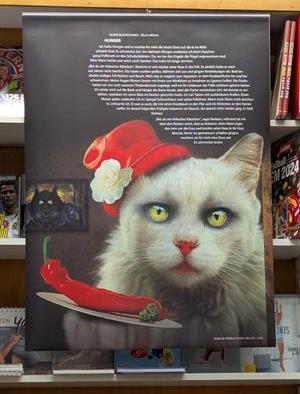
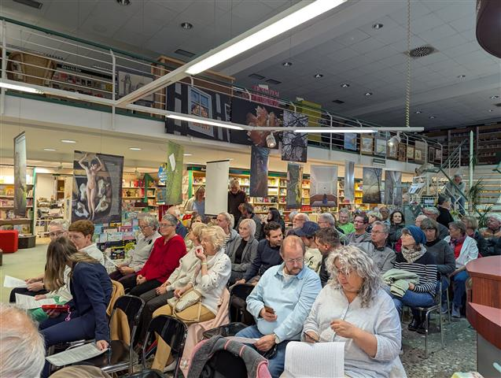
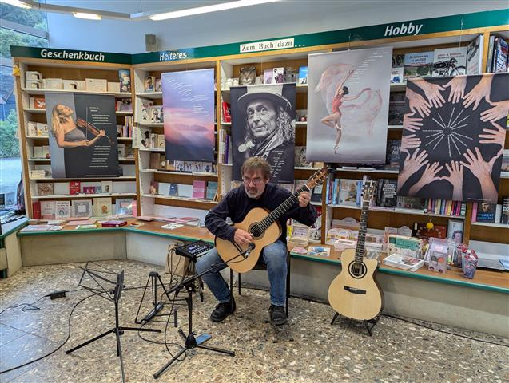

Die Premiere für den Südthüringer Literaturkalender 2026 geriet zu einem vollen Erfolg. Vor vielen Gästen trugen insgesamt elf beteiligte Autorinnen und Autoren ihre Texte vor, andere wurden von den Moderatoren Ulrike Blechschmidt und Holger Uske bzw. von Margit Schiffner gesprochen. Jeder der Beiträge wurde vom Publikum mit viel Beifall bedacht. Der Gitarrist Falko Wiesner brachte zwischen den vier Textblöcken einfühlsame eigene Stücke zu Gehör, die sich wunderbar in die Lesung einfügten.
Neben zahlreichen beteiligten Autoren und Fotografen bzw. bildenden Künstlern waren auch etliche weitere Autoren gekommen. Auch Judith Siebert von der Thüringer Kulturstiftung in Gotha konnte sich selbst einen Eindruck vom besonderen literarischen Wirken in der Region verschaffen.
Am Ende gab es viel Beifall für die Premierenlesung – und für den Kalender selbst, der mit seinen witzigen, ironischen, nachdenklichen und poetischen literarischen Angeboten Literatur- und Kunstinteressenten durch das Jahr begleiten wird. Ein besonderer Dank für deren Engagement ging an Heidi Büttner, stellvertretende Vereinsvorsitzende des Südthüringer Literaturvereins, die für die Organisation der Texte verantwortlich zeichnete, und Andreas Kuhrt, der die bildkünstlerische Gestaltung übernahm und die Freunde des Fotoclubs Kontrast und weitere zur Mitwirkung gewann.
Der Kalender ist im gut geführten Buchhandel, z.B. im Buchhaus Suhl, für lediglich 15 € (Zwei-Wochen-Kalender im Format DIN A 3) erhältlich.



